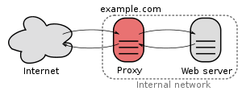

问题描述
Nginx服务器返回大量502Bad Gateway和504 Time-Out，代理服务器Jetty端存在大量CLOSE_WAIT和TIME_WAIT状态的连接
 错误信息查看口令：
错误信息查看口令：
netstat -n | awk '/^tcp/ {++S[$NF]} END {for(a in S) print a, S[a]}'
解决方案
- Linux中TCP/IP内核参数 优化
编辑参数：
vi /etc/sysctl.conf1
2
3
4
5
6
7
8
9
10
11
12
13net.core.somaxconn = 4096
net.ipv4.tcp_max_syn_backlog = 8192
net.ipv4.tcp_syn_retries= 5
net.ipv4.tcp_synack_retries = 5
net.ipv4.tcp_abort_on_overflow=0
net.ipv4.tcp_tw_reuse=1
net.ipv4.tcp_tw_recycle=1
net.ipv4.tcp_timestamps=1
net.ipv4.tcp_syncookies=1
net.ipv4.tcp_max_tw_buckets=90000
net.ipv4.tcp_fin_timeout=30
net.ipv4.ip_local_port_range=10000 65000
net.ipv4.tcp_keepalive_time=1200
让参数生效：/sbin/sysctl -p
- Nginx配置参数
主要配置三个proxy_超时控制参数
1
2
3
4
5
6
7
8
9
10
11
12
13
14
15
16
17
18
19upstream uadb_server{
server 192.168.1.81:8080 weight=1 max_fails=2 fail_timeout=0;
server 192.168.1.82:8080 weight=1 max_fails=2 fail_timeout=0;
}
server {
listen 9090;
server_name uadb_server;
access_log /var/log/nginx/uadb_server-access-ssl.log;
error_log /var/log/nginx/uadb_server-error-ssl.log;
location /{
proxy_pass http://uadb_server;
# time out settings
proxy_connect_timeout 60;
proxy_read_timeout 3600;
proxy_send_timeout 3600;
proxy_temp_file_write_size 64k;
proxy_redirect off;
}
}
Nginx upstream负载均衡/反向代理

upstream算法分析
- 轮询每个请求按时间顺序分配到不同的后端服务器了，后端服务器down掉，自动切除；
- weight：设定服务器权值：如weight=2，服务器性能不均时候使用。weight：默认为1，weight越大，负载的权重越大；
- ip_hash ：每个请求按访问ip的hash结果分配，每个访客有固定的后端服务器，可以解决session问题；
- fair（第三方）：按后端服务器的响应时间来分配，响应时间短的优先分配
- url_hash (第三方)： 按访问的url的hash结果分配，使每个url定向到同一个后端服务器，后端为缓存服务器比较有效。
upstream参数介绍
- down：当前的IP server暂时不参与负载，不进行反向代理；
- max_fails：允许请求失败的次数默认为1，当超过最大次数时，返回proxy_next_upstream模块定义的错误；
- fail_timeout：max_fails次失败后，暂停的时间；
- backup：其它所有非backup机器down或者忙时候，请求backup机器，这台机器压力最轻。
netstat参数状态
查看口令：netstat -an
参数说明：
1
2
3
4
5
6
7
8
9
10
11LISTEN：侦听来自远方的TCP端口的连接请求；
SYN-SENT：在发送连接请求后等待匹配的连接请求；
SYN-RECEIVED：在收到和发送一个连接请求后等待对方对连接请求的确认；
ESTABLISHED：代表一个打开的连接，我们常用此作为并发连接数；
FIN-WAIT-1：等待远程TCP连接中断请求，或先前的连接中断请求的确认；
FIN-WAIT-2：从远程TCP等待连接中断请求；
CLOSE-WAIT：等待从本地用户发来的连接中断请求；
CLOSING：等待远程TCP对连接中断的确认；
LAST-ACK：等待原来发向远程TCP的连接中断的确认；
TIME-WAIT：等待足够的时间以确保远程TCP连接收到中断请求的确认；
CLOSED：没有任何连接状态；
服务器TCP连接状态
查看口令：netstat -an|awk '/^tcp/{++S[$NF]}END{for (a in S)print a,S[a]}'
CLOSED：没有连接活动或正在进行的；
LISTEN：服务器正在等待的进入呼叫；
SYN_RECV：一个连接请求已经到达，等待确认；
SYN_SENT：应用已经开始，打开一个连接；
ESTABLISHED：正常数据传输状态，也可以近似的理解为当前服务器的并发数；
FIN_WAIT1：应用已经完成；
FIN_WAIT2：另一边同意释放；
ITMED_WAIT：等待所有分组死掉；
CLOSING：两边同时尝试关闭；
TIME_WAIT：另一边已初始化一个释放；
LAST_ACK：等待所有分组死掉；